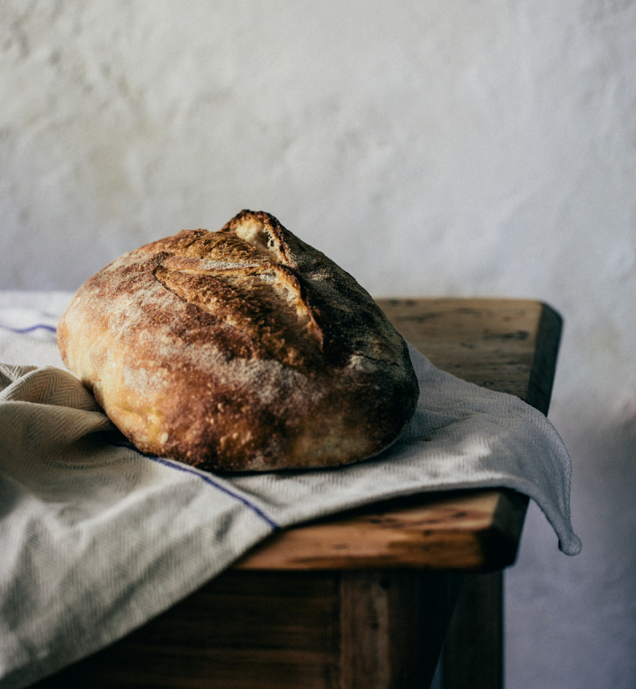

Products
RUSTIC, PURE AND UTTERLY EXCEPTIONAL SOURDOUGH.
At SweetEscape we have been mastering the ancient art of sourdough breadmaking for more than 20 years.
SweetEscape sourdough bread is created by hand from Australian flour, filtered water, sourdough culture and sea salt. These simple ingredients combine across a traditional 30-hour fermentation and proofing process, and each loaf is shaped by hand before being baked on the stone floor of the oven. Every loaf is an individual expression of the baker’s hands: no two loaves are ever the same.
BAGUETTE Á L'ANCIENNE
A traditional sourdough baguette inspired by our travels to France. Perfect with cheese, antipasto, pasta or soup, find it in plain, mixed seed and sesame seed varieties.
BREAKFAST SEED LOAF
A daily bread worth waking up for. This wholewheat loaf is full of the goodness provided by sunflower seeds, linseeds, pumpkin seeds, LSA (ground linseeds, sunflower seeds and almonds) and sesame seeds.
CASALINGA
One of our most popular loaves. Proved in Belgian linen and baked on the stone floor of the oven, the Casalinga loaf has a thick crust and open, holey texture.
CIABATTA ROLLS
These rustic, Italian-style rolls are excellent filled with fresh salad, hot roast meat and mustard, or toasted with cheese and cured meats.
KALAMATA OLIVE BAGUETTE
A crusty baguette filled with juicy Australian olives. This traditional baguette is delicious dipped in olive oil or served with fresh goat cheese.
RUSTICA
Moist and full of both flavour and goodness, this loaf is made from 100% organic stoneground wholewheat flour from New South Wales.
CASALINGA
The Irrewarra Rustica loaf is crafted from very ripe fermented 100% sourdough dough, which is unmoulded – simply cut into a rectangular slab and baked on the stone floor of the oven. It has an open and moist internal texture with a crusty, chewy exterior.
SOY AND SEED SUPERLOAF
Superfoods abound in this loaf which is perfect for toast and sandwiches. Find kibbled soy, linseeds, quinoa, chia seeds, oat bran and sesame seeds throughout this versatile and delicious loaf.